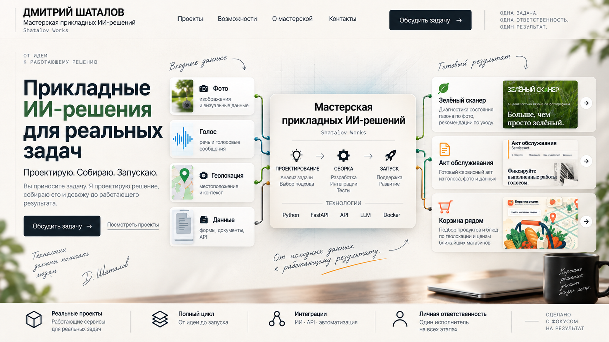
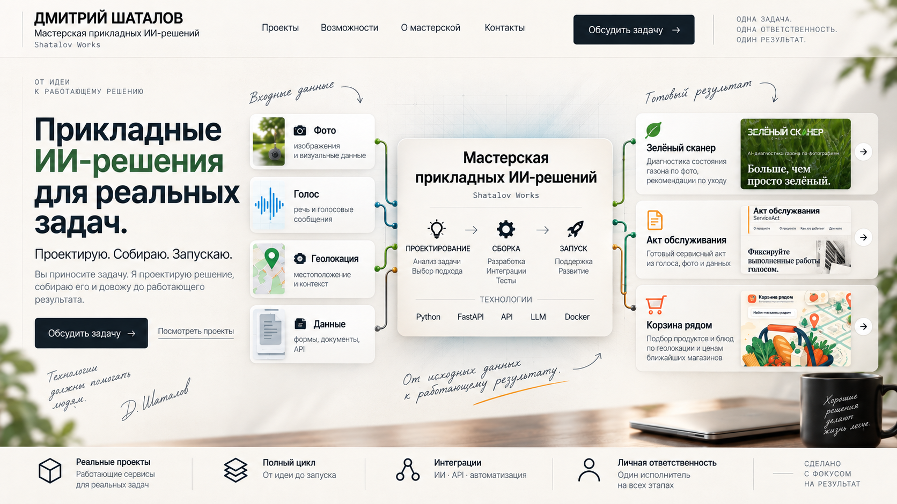
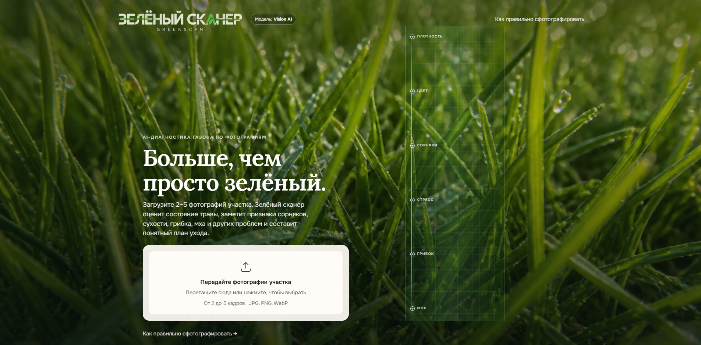
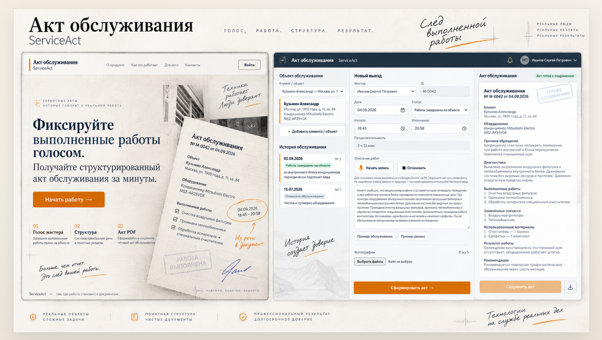
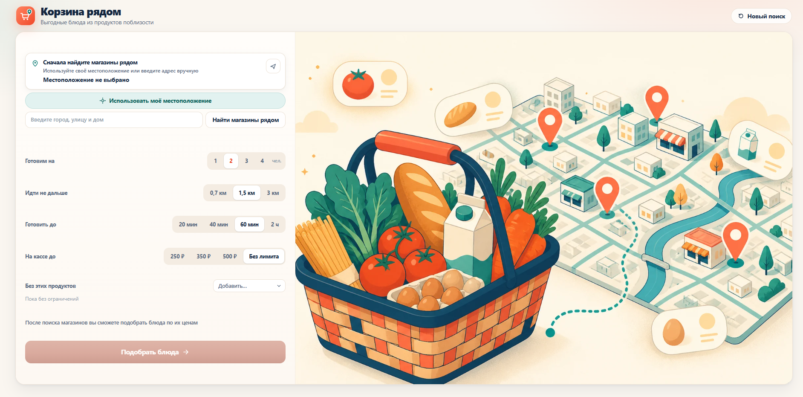

01
Фото
Изображения и визуальные данные
Дмитрий Шаталов. Мастерская прикладных ИИ-решений. Shatalov Works.
Проектирую. Собираю. Запускаю.
Вы приносите задачу. Я проектирую решение, собираю его и довожу до запуска.
Входные данные: Фото, Голос, Геолокация, Данные.
Процесс: Проектирование, Сборка, Запуск.
Результаты: Зелёный сканер, Акт обслуживания, Корзина рядом.


Одна задача.
Одна ответственность.
Один результат.
Проектирую. Собираю. Запускаю.
Вы приносите задачу. Я проектирую решение,
собираю его и довожу до запуска.
Технологии
должны помогать
людям.
Д. Шаталов
Входные данные
01
Фото
Изображения и визуальные данные
02
Голос
Речь и голосовые сообщения
03
Геолокация
Местоположение и контекст
04
Данные
Формы, документы, API
Мастерская
прикладных ИИ-решений
Shatalov Works
Проектирование
Анализ задачи
Выбор подхода
Сборка
Разработка
Интеграции
Тесты
Запуск
Поддержка
Развитие
Технологии
Python FastAPI API LLM Docker
От исходных данных —
к работающему результату.
Готовый результат Реальные результаты
01
Зелёный сканер
Диагностика состояния газона и рекомендации Диагностика газона и рекомендации

02
Акт обслуживания
Готовый сервисный акт из голоса, фото и данных Готовый сервисный акт

03
Корзина рядом
Подбор продуктов и блюд по геолокации и ценам Подбор продуктов и блюд

Реальные проекты
Работающие сервисы
Полный цикл
От идеи до запуска
Интеграции
ИИ · API · автоматизация
Личная ответственность
Один исполнитель на всех этапах
SW / ИЗБРАННЫЕ РАБОТЫ
Несколько реализованных проектов.
SW / ПРОЕКТ 01
AI/Vision-сервис для оценки состояния газона по фотографии — как для частных участков, так и для компаний, занимающихся озеленением и ландшафтным дизайном.
Python / FastAPI / Vision AI / Docker / Nginx / Linux
Открыть проект →SW / ПРОЕКТ 02
Сервис подбора недорогих блюд по ценам ближайших магазинов.
Python / FastAPI / JavaScript / API / Docker / Nginx / Linux
Открыть проект →SW / ПРОЕКТ 03
AI-сервис для подготовки сервисного акта из голоса или обычного текста. При необходимости готовый акт можно передать в CRM через API или webhook.
Python / FastAPI / Speech-to-Text / LLM / SQLite / PDF
Открыть проект →SW / НАПРАВЛЕНИЯ
Помимо веб-сервисов, разрабатываю Telegram-ботов и решения для автоматизации рутинных процессов.
Собираю сервисы, в которых AI решает конкретную часть рабочего процесса: анализирует изображения, структурирует текст или помогает получить готовый результат.
Подбираю модель под задачу и связываю её с веб-интерфейсом, API и серверной логикой.
Разрабатываю ботов под конкретный рабочий сценарий: приём запросов, уведомления, доступ к AI и работу с сервисом.
При необходимости бот связывается с внешними API и другими системами.
Ищу повторяющиеся ручные операции, которые можно передать программе: обработку данных, подготовку документов, уведомления или маршрутизацию информации.
Цель — убрать лишнюю ручную работу, а не автоматизировать ради самой автоматизации.
Связываю между собой внешние сервисы, AI-модели, CRM и другие системы через API.
Настраиваю обмен данными так, чтобы отдельные части складывались в один процесс.
Довожу приложение до рабочего адреса: Docker, VPS, Nginx, домен и HTTPS.
После развёртывания проверяю работу уже на сервере, а не только у себя на компьютере.
Python / FastAPI / Docker / Nginx / Linux / API / SQLite / Vision / LLM / Speech-to-Text
SW / ТРАЕКТОРИЯ
Физика, финансы и собственный бизнес дали мне разные способы смотреть на задачу. Сейчас я соединяю этот опыт в прикладной AI-разработке.
МИФИ
молекулярная физика,
ионная оптика и масс-спектрометрия
Физика приучила разбирать сложную систему на части, искать причинно-следственные связи и проверять гипотезы, а не доверять первому ответу. В разработке использую тот же подход: сначала понимаю задачу и ограничения, потом выбираю инструмент.
РЭА им. Г. В. Плеханова
бухгалтер-аудитор
работа в банковской сфере
Финансы приучили к структуре, точности и проверке данных. В проектах это видно в требованиях, расчётах и в том, как я слежу за данными на каждом этапе работы системы.
собственный бизнес
в сфере розничной торговли
Собственный бизнес научил смотреть не на технологию саму по себе, а на реальную проблему, за решение которой человек или компания готовы платить. Поэтому мне важны понятный сценарий, стоимость решения и то, чтобы продукт действительно использовался.
прикладная разработка
AI-сервисы / автоматизация / интеграции
AI для меня — не отдельная магия, а инструмент, который соединяет предыдущий опыт. Использую модели там, где они дают конкретный результат: анализируют изображения, структурируют речь и текст или помогают автоматизировать рабочий процесс.
SW / ПРИНЦИПЫ
КАК Я РАБОТАЮ
Веду проект от постановки задачи до запуска. Не передаю работу между исполнителями — контекст не теряется, а за результат отвечаю я.
Сроки, объём работы и ожидаемый результат обсуждаем напрямую. Если в процессе возникает проблема, разбираюсь в причине сам, предлагаю решение и довожу задачу до согласованного результата.
Для меня готовый проект — это не макет и не локальный прототип. При необходимости настраиваю сервер, домен, HTTPS и рабочее окружение, а затем проверяю, что всё работает уже после запуска.
Стараюсь заранее зафиксировать задачу, её границы и ожидаемый результат. Соблюдаю договорённости по срокам, внимательно отношусь к деталям и предпочитаю спокойный рабочий процесс без лишней суеты.
SW / КОНТАКТ
Если есть задача, из которой можно сделать работающий продукт — напишите.
SHATALOV WORKS
Проектирую. Собираю. Запускаю.